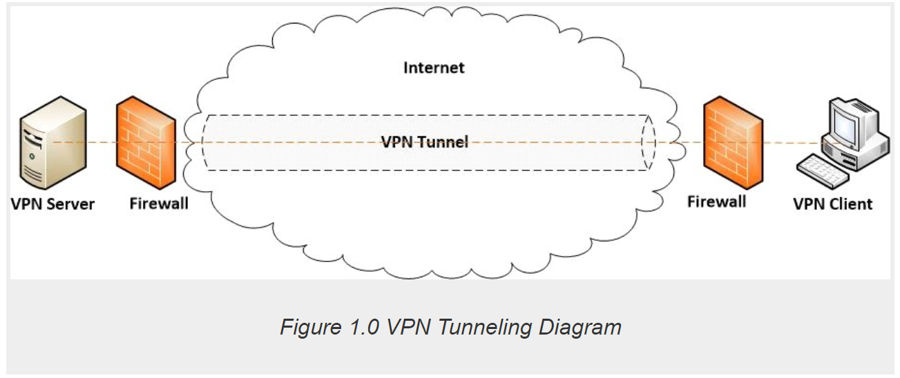

Wonder why there are so many VPN services nowadays? The companies ExpressVPN, NordVPN, and SurfShark may sound familiar and the term VPN has become a common term now.
What is a VPN though?
Why do people use it? How does it work?
The cryptographic understanding of VPNs also requires us to look into how information across the Internet is packaged and sent. To understand VPNs, we'll look into how information over a VPN is packaged via a process called Tunneling, as well as what cryptographic measure, or Encryption, must occur to send the information.
First and foremost, let's establish the basics.
A VPN, or Virtual Private Network, is a networking tool that allows secure, anonymous communication across the Internet(Sharma and Kaur 2336).
You might see VPNs at your workplace or school because it allows remote authorized access and secure communication to private property on a private network; however, the main benefits of VPNs that draw people are the abilities to unblock websites and bypass web filters that your government, entertainment platforms, and your local Internet Service Provider (ISP) may impose onto your Internet Protocol(IP) address. (Bates 68)
How can this be?
VPNs act as a guard that is the go-between your device and the Internet. The network communication that would typically occur between you and the Internet is siphoned through the VPN's server first. Since the Internet connects many users around the world, a standard for network communication was necessary to support large network connectivity. This standard, Open Systems Interconnection (OSI), provides the structure for what information is necessary to connect and maintain a connection over a network.
The International Organization of Standardization (IOS) created the OSI to organize layers that handle different data(Protocol Data Unit, or PDU) and responsibilities.
ISO-OSI Network Communication, Fathima 1.
Data Encapsulation, Fathima 2
UDP is a protocol commonly used in the Transport Layer.
Each of these layers prepares different pieces of information it wants to send, as well as decomposes information it receives. All this data spread amongst the layers is combined in Data Encapsulation.
Understanding these layers and the data managed in each helps in understanding how VPNs secure the data within a connection.
For example, VPN's allow for you to surf the web anonymously because the Network Layer adds not your IP address, but the VPN Server's IP Address; this way your IP address, as well as your location, is kept anonymous from the Internet.